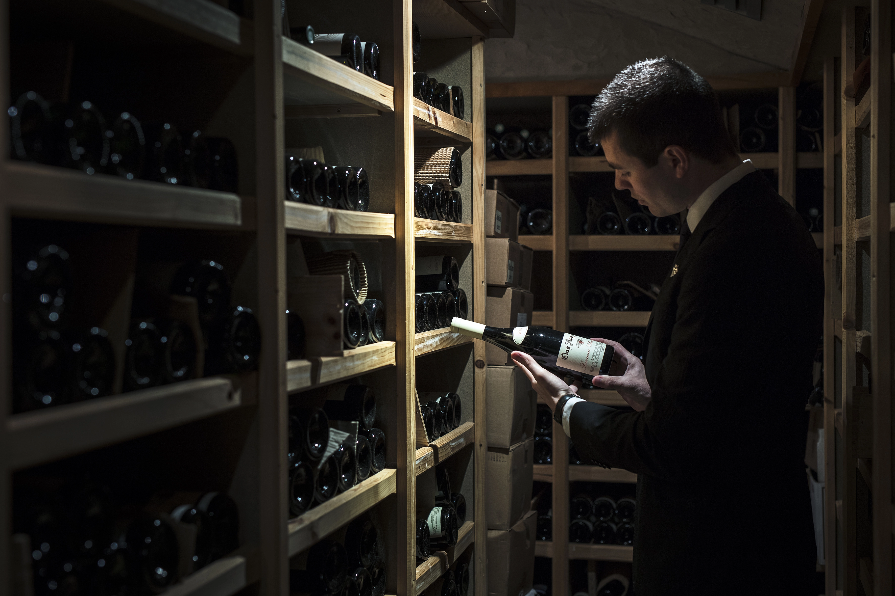

Âme végétale et lacustre
Reflet d’un garde-manger nourricier, la cuisine, brut et authentique dessine ses lignes dans ses courbes sauvages et charnelles sans contour
Notre menu


La cueillette
Inspiration quotidienne, dans son jus, le végétal s’exprime au gré du temps, dans ses moindres mouvements, discret ou profus, libre d’être soi.
Verre du terroir
Explorer un territoire et rendre à la vigne la beauté des racines locales, les cépages d’ici, écho aux flacons d’ailleurs, la pertinence d’une équipe sommelière en totale cohérence
La carte des vins
